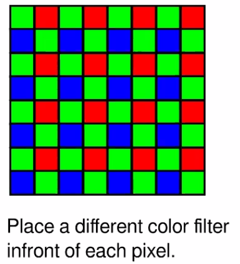
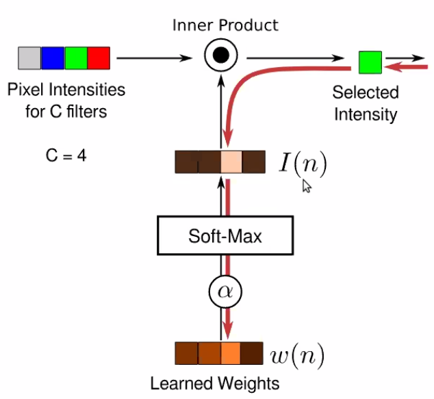

Note on Hardware Based Computational Photography
Now we have far more computational power than before!
Besides, many images will go through complex algorithms as postprocessing.
But we can also optimize camera measurement, so that results look even better.
Fundamental tradeoff in imaging
- Exposure Short: Light is dim, noise is high
- Exposure Long: Camera and scene may move, may have motion blur
- Large Aperture: Defucus blur, many points are not in focus.
- Quantization and Dynamic range
- Cannot have multiple measurements at the same location.
Traditional color measure and interpolation.

Color interpolation problem
2014 Rethinking Color Cameras ICCP
Make sparse estimation of chromaticity and then propagate.
The assumption is color changes slower than luminance, SO it make sense to measure luminance more densely, then propagate color on the gray image.
They want to learn the camera sampling design from data.
Automatic Design Multiplexing
Learn sensor design from data
Intrinsically you are treating your camera as a parametrized layer - input light output a pixel array.
The only tricky part is to parametrize your camera design and optimize it through back-prop
You want a selection vector at each location
You want to learn a differentiable one-hot vector at each location!
Weights are continuous, but go through SoftMax as kind of

Use $\alpha$ as a temperature controller, cooking up $\alpha$ parameter so that it encourage a hard decision finally!
Input a 4 channel image RGBW, and do selection at Camera Layer.
Ask how modify cameras can help with your algorithm.
Fundamental Budget is Light Flash is a traditional way to tackle this! Large amount of light in short time can make

But flash could render the light and dark appearance very different! Actually you want the Quality of flashed Image and of light shading original image.
2004
- Decompose the Flash and Original image and recombine them
- Flash provides finer detail, and original color
- Original provides low frequency stuff and shading info (intensity info)
- Do
Depth from Defocus
Blind defocus blur kernel estim is hard.
Blur kernel size is propo to distance.
Blur image, the sharp edge looks like rounded edges.
- Step function edge -> Sigmoid function edge
- So the stats of edge doesn’t inform the
Defocus blur is hard because it’s too uniform, too symmetric! Unlike the motion blur!
If you add a shaped mask at aperture (not a circular hole), then the blur kernel will have unique characteristics.
So now you want to optimize the mask on aperture!
-
You can do grad free optimization! Or gradient based optimization.
-
The objective is that the statistics of the convolved image is “maximally” different from the statistics of the natural edges
- Using KL divergence as your metric.
Discretize depth map and pick kernel for a depth.
Motion Blur Estimation
We can choose kernel of defocus to make the debluring easier! Can we change the motion blur kernel, to make motion debluring easier?
Design a shutter openning and close pattern!

- Object motion
- Short lines in different direction and length
- Seems easier than camera shake
- Camera motion
- Arbirary trajectory, applied to all objects.
Note the blur is a good cue for moving speed! Good for finding moving obj in still image
Optimize Camera Shake
Can we move your camera so that the blur kernel is no longer spatially varying? Using these camera, you can apply uniform deconvolution.
- Assumption: Motion is 1d.
- In a 1d problem setting!
Shaking your camera in this parabolic way, then your blur will be motion invariant! Note as long as your object motion is 1d, then you can make it invariant no matter depth!

Light Field Imaging
Normally, we measure the light intensity as “flux”, so it’s integrating over all angles at a small window.
Penoptic function $L(x,y,z,\theta,\phi)$
- This is useful as you can extend the light rays to other planes.
- THis is a universal language for optics! All kinds of imaging and photography is taking some different kinds of integration over the field.
Pinhole camera is choosing a location at the space. And then measure the $L(\theta, \phi)$
If you have the full penoptic function, you can simulate do any imaging you want!
- Refocus
- Simulate Stereo
- Change viewing direction
- Change view point
How can you possibly capture a light field?
- Pinhole is $L(x_0,y_0,z_0,\theta,\phi)$
- Easiest solution is to have an array of camera! (Stanford Camera Array)
- Or build a spectial kind of camera. Light Field Photography with Hand-Held Plenoptic Camera.

It’s like multi-eye of bees!
It’s like simulate capturing from different viewing direction.
Computational Model of VIsual Processing 1991.
You can add micro-lens array at your image plane. It will be like slightly changing your viewing direction.
Stanford TR 2005

We can project image to different results, doing post hoc de-focusing
Raytrix
Generalize Light FIeld Measurements
So generally, you can do a measurement on the light field, and then do computation to make it back.
LenseLess Camera:
- Lense is what makes camera rigid and expensive!
2017 FlatCam
Optics for Computation
- Aperture code is actually performming physical convolution over your light data.
- BUT, Physical convolution is non-negative.
- Can induce different kernel at different scales
- And for nearly all CV algorithm, the first step is doing convolution!
Low power object recognition can be easily done by a aperture masked camera!
Diffraction grating can simulate convolution with different bend pass filters.
ASP Vision: Optically Computing the 1st Layer of CNN using Angle Sensitive Pixel
Time of Flight Sensors (Lidar)
The essence of Radar is measuring the response time instead of intensity! Lidar is the same idea for light. But the problems is light is super fast.
Photon Mixing Device
- Sending light in a temporal pattern $\cos(\omega t)$
- Receive light will be phase shifted a little bit.
- If you have a perfectly synchronized clock at your receiver $C(t)=\cos(\omega t),S(t)=\sin(\omega t)$
- Projection using this mask will give you the phase shift!
LIDAR and Kinect v2 use this!
You can use this to reconstruct light
- You can image the
- Image the light speed in different medium. (intensity may be same but time of flight is )
- Light trap: multiple reflections and multiple angle
- You can reconstruct your
Many ideas are quite transferable across domain and problems! Can be low hanging fruits!